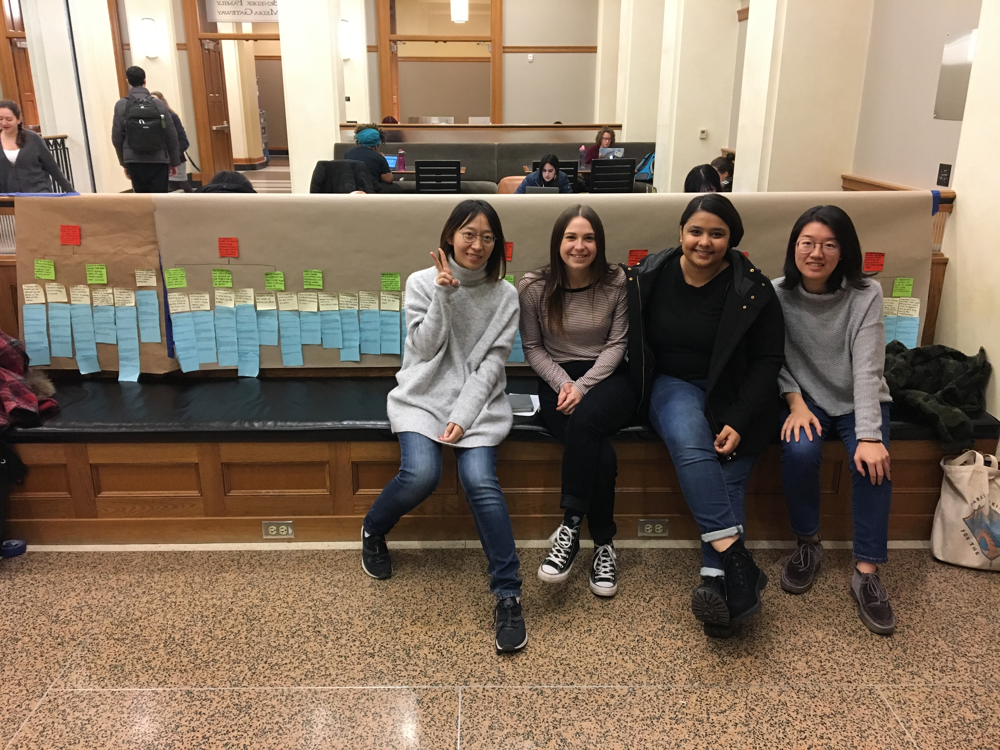
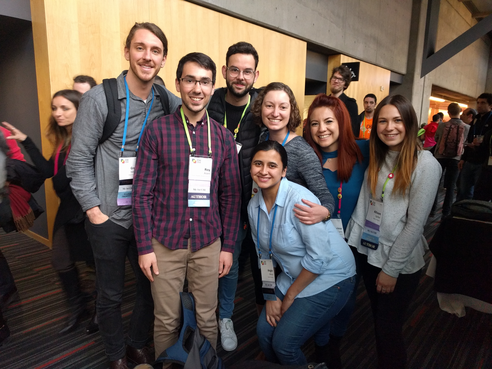
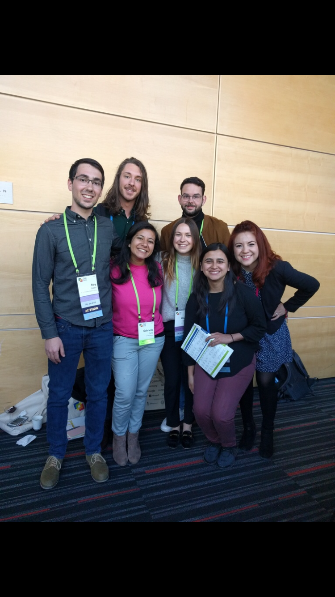
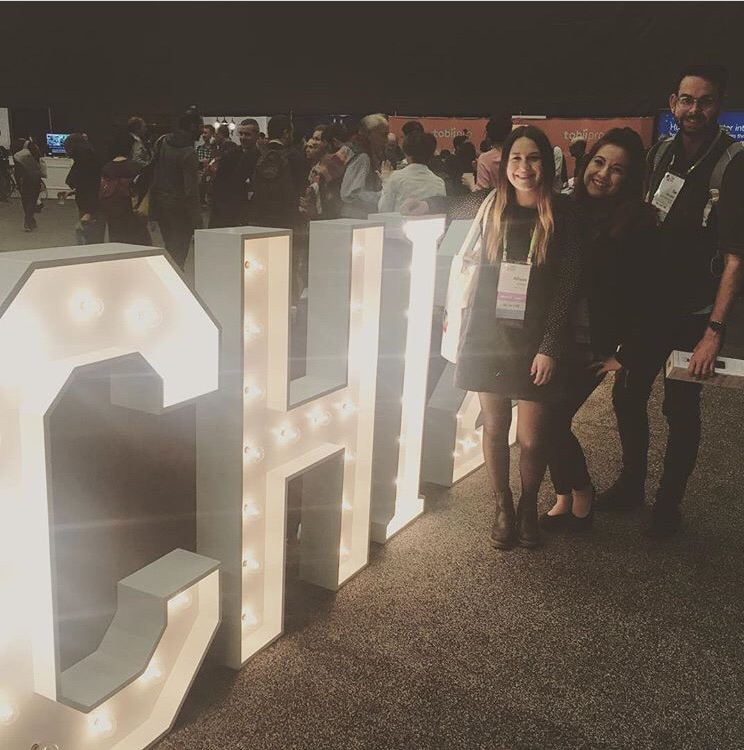
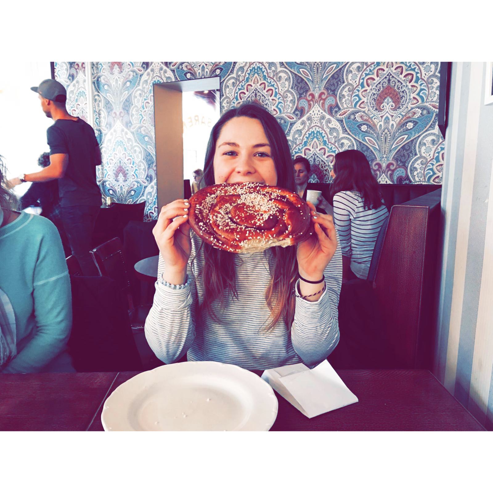
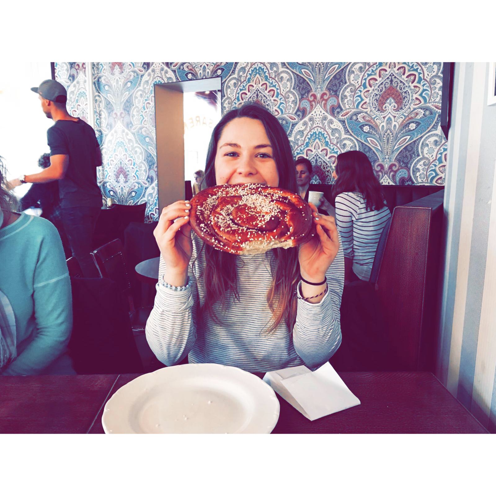

I am currently pursuing a masters degree at the University of Michigan. I am studying Human Computer Interaction and User Experience Research and Design.
I have a bachelors of science degree from Drexel University in psychology, as well as a minor in criminal justice. I have a passion for understanding human behavior. I have a background working with children with special needs.
My research for the past four years has focused on creating and deploying a data collection tool for practitioners to be able to collect behavioral data on their students. I am also interested in making data more accessible and more prominent in all aspects of a child with special needs’ life. Additionally, I am very interested in how technology can also be used to aid recently released or soon to be released offenders assimilate back into society.
In my spare time, I enjoy reading, thrifting, flipping furniture, and attending concerts. I also enjoy volunteering at my local animal shelter and taking pottery classes.
Photo Gallery
   


 
